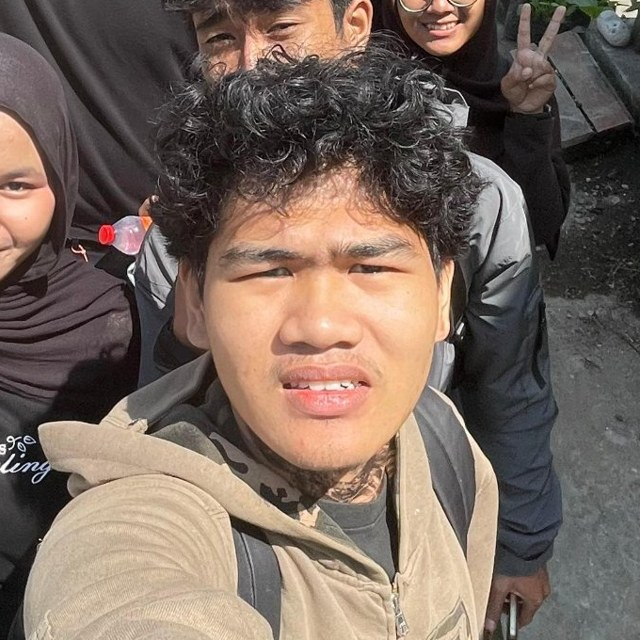

Situs portofolio ini
Dibangun dari nol dengan HTML, CSS, JavaScript, dan satu fungsi Netlify untuk penilaian pengunjung.
Mahasiswa semester satu Sains Data yang sedang belajar mengubah data mentah menjadi keputusan.

Sedang saya kerjakan
Empat tahun, satu portofolio proyek nyata.
Lihat proyek
Saya Putra Izhar Gumilar, mahasiswa Sains Data di Indonesia. Tiga sampai empat tahun ke depan saya ingin memperkuat matematika dan statistika, lalu membangun proyek yang bisa dilihat dan diuji orang lain.
Situs ini bagian dari proses itu: ruang untuk mencatat apa yang saya pelajari dan menunjukkan hasilnya.
Dibangun dari nol dengan HTML, CSS, JavaScript, dan satu fungsi Netlify untuk penilaian pengunjung.
Eksplorasi dataset Indonesia dengan Pandas. Segera hadir.
Regresi sederhana dengan scikit-learn. Segera hadir.
Matematika, statistika dasar, algoritma, dan Python.
Pembersihan data, visualisasi, SQL, proyek nyata pertama.
Model prediksi, dasar deep learning, kompetisi data.
Skripsi, magang, dan portofolio yang siap dinilai.
Ya, terutama proyek data dan web tingkat pemula. Kirim ide Anda lewat email.
Di GitHub. Tautan akan ditambahkan setiap proyek selesai.
Hanya angka bintang dan komentar, tanpa nama atau email.
Untuk diskusi, kolaborasi, atau sekadar bertanya soal belajar Sains Data.